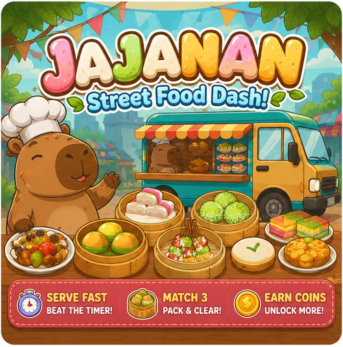
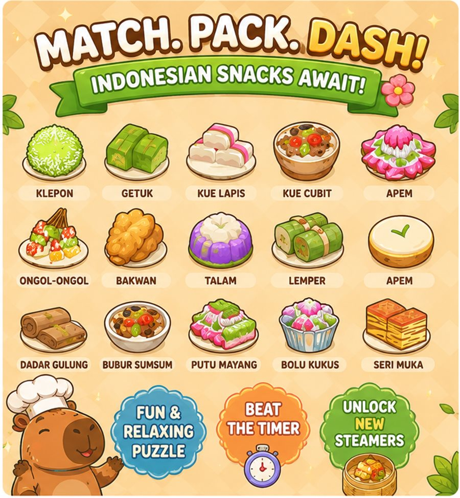

Jajanan: Snack Sort Puzzle
Sort and match 3 Indonesian street snacks before the steamer timer runs out!

Jajanan — Mobile Game
Jajanan: Snack Sort Puzzle is a mobile match-3 sorting game where players run a cozy Indonesian street food stall. Steam is rising, the baskets are stacking up, and the customers are getting hungry! Drag, sort, and match 3 identical Indonesian street snacks to pack them away before the clock runs out.
Every basket holds three slots, and only the top tray is yours to move. Slide trays between the steamers, line up three of the same snack, and watch them pack away in a puff of steam. Sounds easy — until the board fills, a basket seals itself shut, and a customer arrives wanting exactly the snack you just buried at the bottom.
Jajanan is a cozy sorting puzzle with a real appetite — and a very patient capybara. The game features a rotating cast of authentic Indonesian street snacks (klepon, getuk, kue lapis, lemper, and more), a relaxed-but-tense timer-driven core loop, and unlockable steamers as you progress. Jajanan uses Google Sign-In and Google Play Games Services to save your game progress across devices, track achievements, and show leaderboard rankings.
A Cast You'll Love

Match, Pack, Dash
Fast-paced time management with a relaxed, cozy art style — match 3 snacks to pack a basket, beat the timer, and keep every customer happy.

Real Indonesian Snacks
Every snack in the game is based on a real Indonesian street food favorite — sort your way through klepon, getuk, kue lapis, lemper, and more.
Google Account Integration
Jajanan uses your Google Account to securely authenticate your profile, back up your game progress to Google Cloud, and display your achievements on Google Play Games leaderboards. We do not access or store your personal contacts, emails, or private data.
Signing in with Google is optional — you can play Jajanan without an account, but connecting one lets your progress follow you across devices and unlocks leaderboards and achievements. See our full Privacy Policy for details on exactly what is and isn't collected, and our Terms of Use for the rules of play.